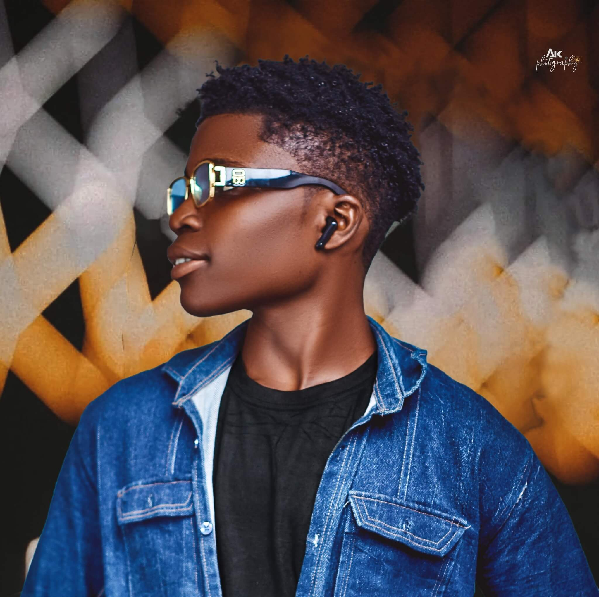
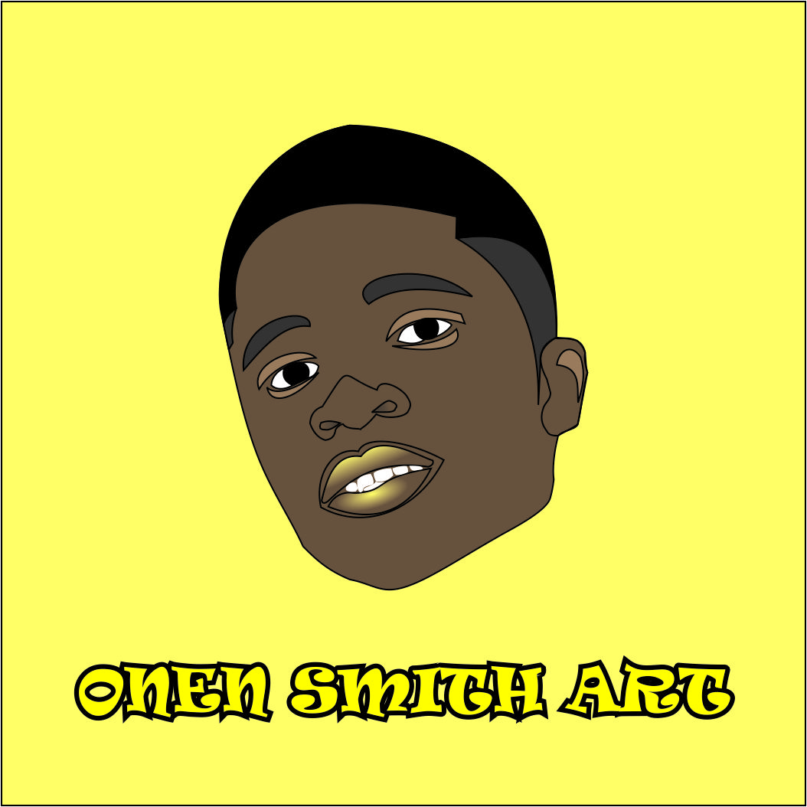
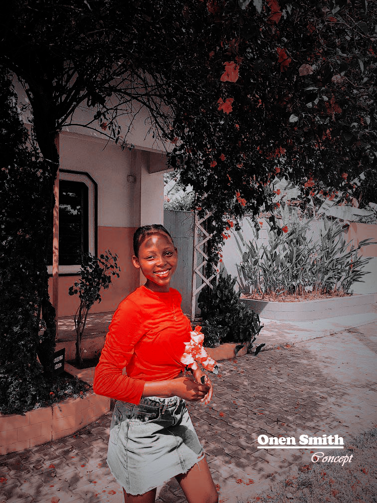

EMMANUEL ONEN®
Onen Emmanuel
Full Stack Web Developer & Designer


LOCATED IN NIGERIA
Full Stack Web Developer & Designer

Hi, I’m Onen Emmanuel, a passionate Full Stack Developer with a love for building user-friendly, functional, and visually appealing digital experiences. I enjoy turning ideas into reality through clean code and creative design.
Beyond development, I have hands-on experience with CorelDRAW and Adobe Photoshop, which allows me to bring a strong sense of design and visual storytelling to my projects.
When I’m not coding or designing, you’ll probably find me exploring new video games or learning something new about technology and Researches.
Above all, I’m a Christian, and my faith guides the way I live, work, and connect with others.

Created a clean, modern startup logo using CorelDRAW with strong vector shapes and color theory application.

Designed a bold brand mark using CorelDRAW, focusing on minimalistic composition and scaling usability.

Developed a clean logo for a bookshop, combining vector art and typography with balanced color harmony.

Created a multi-purpose logo with CorelDRAW, using a clear color scheme and structured vector techniques.

Designed a 3D background concept for a business card using CorelDRAW and lighting effects for depth.

Created a personal avatar illustration using CorelDRAW, focusing on facial outlines and digital painting techniques.


Improved the birthday card design through layout refinement, better typography, and stronger color balance.

Designed a colorful birthday card using CorelDRAW with custom illustrations, hand-crafted elements, and expressive typography.

Designed this portrait using dripping and slash effects while applying color harmony and contrast enhancement.

A vibrant portrait design featuring color splash effects, clean cut-out work, and balanced visual composition. Edited to enhance lighting, contrast, and overall style. The text in the artwork contains a small typo in the word “Graphic Designer.”


Performed a full Photoshop retouch: lighting balance, color correction, texture cleanup, and background enhancement.
During my internship at Eyako Printest, I gained hands-on experience with Microsoft Word, Excel, and CorelDRAW. I contributed several designs to the company’s projects, some of which are showcased in my portfolio.
Working on full stack web development projects, handling both frontend and backend development.